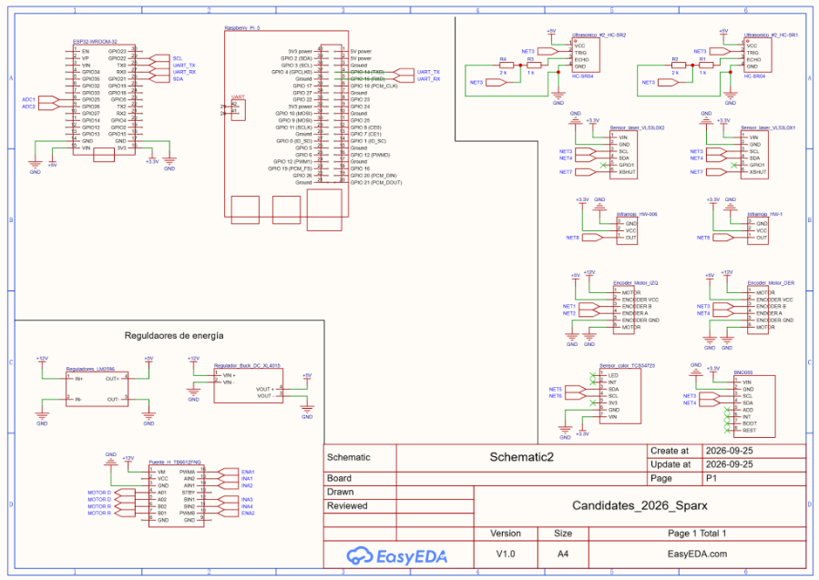
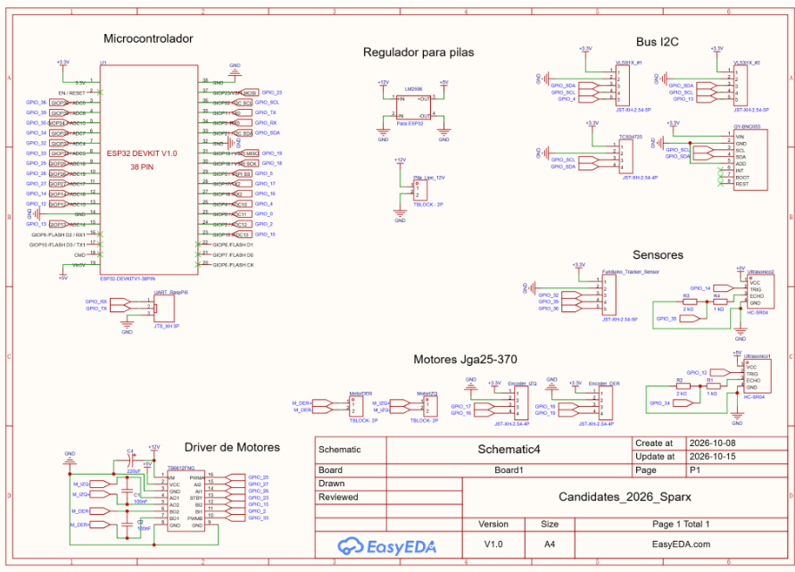

Esquemático
Antes de hacer la PCB se diseñó un esquemático para saber qué pines se iban a usar, los voltajes y las resistencias necesarias. Se hicieron dos versiones.
Esquemático inicial
Semana 3
Se hizo con todos los componentes principales. Todos los componentes se crearon desde cero y sin footprint, y no todos (como los sensores y los encoders) están soldados directamente a la placa, por lo que este esquemático sirve solo como guía para ver los pines que se van a utilizar y tener una idea de los voltajes y las resistencias.
Incluye, por ejemplo, el divisor de voltaje para la señal ECHO de los ultrasónicos (ver Sensores).


Esquemático inicial con los componentes principales
Nota
Se planeó hacer otro esquemático enfocado totalmente en la placa, para exportarlo directamente con footprints a la PCB. Ese es el esquemático final.
Esquemático final
Semana 5
Se cambiaron algunos componentes (como la ESP32) y se tomaron todos los componentes de librerías, algo que recomendaron los mentores. Esto simplificó mucho la creación de footprints, porque todos los componentes ya incluían uno.


Esquemático final (microcontrolador, regulador, bus I2C, sensores, driver y motores)
Decisiones de diseño
Distribución de pines considerando el I2C: todos los sensores excepto los ultrasónicos usan I2C, lo que ahorró muchos pines, y los pines alcanzaron perfectamente para todos los componentes.
Conectores JST-XH para los sensores: al comparar con los dupont, lo que destacó fue que se acoplan mejor y difícilmente se desconectan por las vibraciones que genera el movimiento del robot, sobre todo al pasar por obstáculos y por la rampa.
Borneras para los motores y las pilas: evitan que se suelten. Esto ya se había comprobado en los módulos L298N, en los que se basó bastante el diseño del esquemático y de la placa.
Truco
Usar componentes de las librerías del software (en lugar de crearlos desde cero) te ahorra mucho tiempo, porque ya traen su footprint.